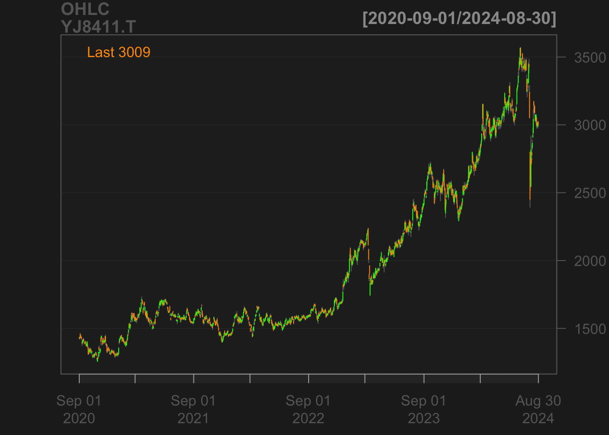
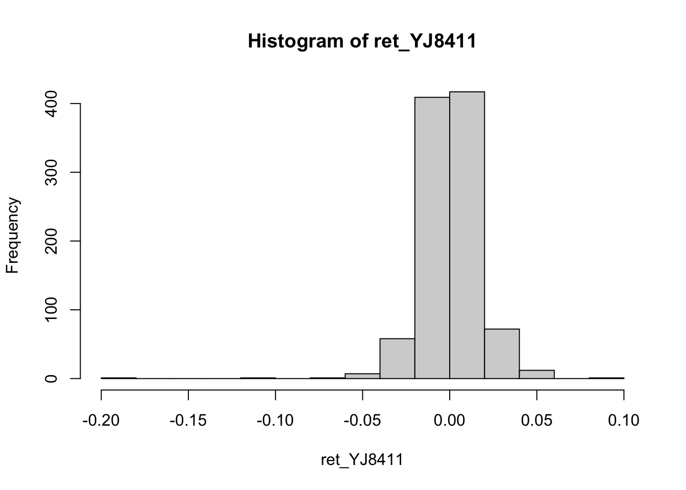
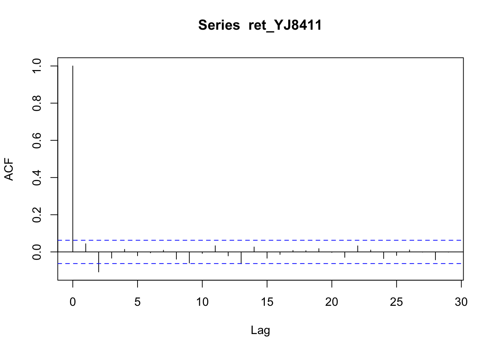
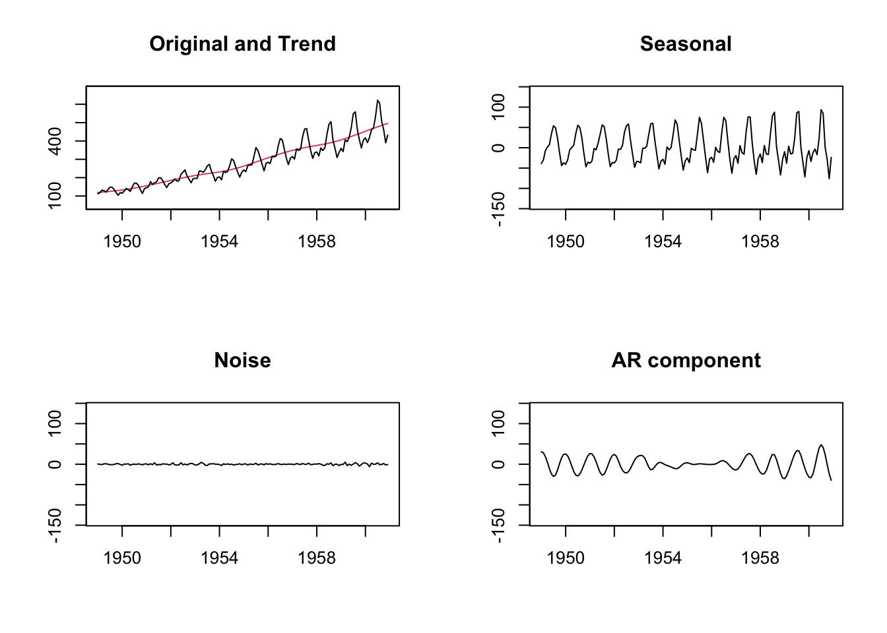

金融時系列解析
2024-03-19 (内容は随時更新します)
1 はじめに
1.1 時系列モデリング
- ターゲットの時系列データの特徴を表現できるような確率・統計モデルの構築
- “stylized facts”等の中から, 重要な特徴にフォーカスする
- 実際の時系列データと構築モデルの持つ特徴が類似するように
- 時系列プロット, 散布図, ヒストグラム, 要約統計量等に関して
- 理論計算やシミュレーション(パスの生成)
- 金融時系列データに現れる特徴は, データ期間 (例, コロナ禍以前・以後) の他, データの観測頻度 (例, 月次, 週次, 日次, 5分次) にも依存
- 構築される時系列モデルに望まれる性質 (要件)
- 記述性 (ターゲットの時系列データとの特徴の類似性の表現)
- 解析容易性, 解釈可能性
- 操作性・取扱容易性
- 推定容易性, 計算効率性
- モデル安定性・頑強性
- 予測精度の高さなど
- 候補となるモデルは無数
- 汎用的で, 良い性質を持つモデルクラスに関する研究
- 時系列解析分野で中核を成すクラス → 線形+定常時系列過程
- モデル選択・推定, モデルの利用
- ターゲット時系列の特徴を踏まえ. 適切なモデルクラスを選択する
- データに対してモデルを適合し, パラメータを推定する
- 推定モデルの妥当性をチェック (モデル診断)
- 予測や制御等に利用
- 本授業で扱う対象・アプローチ
- 目的変数(観測変数)自体が時系列構造を持ち, 時系列モデルで記述されるケースに主要な関心
- 出発点(基本的設定): 1変量の線形・定常時系列過程 → 金融時系列データは, 線形・定常時系列過程から乖離する特徴も有する
- → 非線形 and/or 非定常な時系列過程へ
- 観測変数が多次元で時系列構造を持つケース (多変量時系列)
- 外部変数のあるケース
- 金融時系列解析におけるチャレンジ
- 時系列データは, 確率過程の観点からは, 一本の”サンプルパス”の実現と見なせる
- マクロ・ミクロの状態が 時間と共に変化する金融・経済時系列データは, 再現性の乏しいデータであると考えられる
- さらに, 金融市場は過去に実現したデータに基づいて市場参加者が行動を変化させる
- ある種の”法則性”を仮定しモデルにより表現することで, 金融市場においても”最適な”行動を取りたい
1.2 金融時系列データの特徴
金融時系列データの特徴: みずほ (8411) 株価データの例
- quantmod()による株価データの取得
library('quantmod')
YJ8411.T <- getSymbols('8411.T',from = '2020-10-01', to = '2023-09-29', src = "yahoo", auto.assign = FALSE)
# 日次株価の時系列プロット
chartSeries(YJ8411.T)Figure 1.1: …

Figure 1.2: …
- 日次収益率の時系列プロット

- 日次収益率のヒストグラム

- 日次収益率の要約統計量
library(psych)
describe(ret_YJ8411)
#> vars n mean sd median trimmed mad min max range skew kurtosis se
#> X1 1 734 0 0.01 0 0 0.01 -0.07 0.05 0.13 -0.12 1.86 0
# 要約統計量を計算
# デフォルト出力
# mean
# standard deviation
# trimmed mean (with trim defaulting to .1)
# median (standard or interpolated
# mad: median absolute deviation (from the median).
# minimum
# maximum
# skew
# kurtosis
# standard error
# 注) kurtosisは-3した値- 日次収益率の自己相関

- 日次収益率絶対値の自己相関
1.3 シミュレーションによるサンプルパス生成
- 時系列モデリングでは, 観測時系列データの特徴と比較し, 適切なモデルを見い出すため, シミュレーションを積極的に利用する
- 正規AR(1)モデルの例: \(X(t)=\phi X(t-1) + W(t)\), \(W(t) \sim_{i,i.d.} N(0,\sigma^2)\)
1.4 Rにおける時系列オブジェクト・クラスおよび関数の例
1.4.1 日付・時間データに対するクラス
1.4.1.2 POSIXctクラス
- 日時 (日-時間) を表現する
- Rの内部的には, “POSIXct”というclass属性を持つdouble型の値を持つ
- POSIX = Portable Operating System Interfaceの略
- POSIXct, POSXltの2種類: ct = calender time, lt = local time
now_ct <- as.POSIXct("2023-10-05 19:00", tz = "UTC")
now_ct
## [1] "2023-10-05 19:00:00 UTC"
attributes(now_ct)
## $class
## [1] "POSIXct" "POSIXt"
##
## $tzone
## [1] "UTC"
tomorrow_ct <- as.POSIXct("2023-10-06 20:00", tz = "UTC")
tomorrow_ct - now_ct # 時間差(1日当たり)
## Time difference of 1.041667 days
attributes(tomorrow_ct - now_ct)
## $class
## [1] "difftime"
##
## $units
## [1] "days"1.4.2 時系列データに対するクラス(1): tsクラス
- tsクラス: Rの時系列オブジェクトの基本クラス
# AirPassengers,
# Pan Am, # international passenger bokking (in 1000s) per month
# 1949--1960 (Brown, 1963)
data(AirPassengers)
ap <- AirPassengers
ap
## Jan Feb Mar Apr May Jun Jul Aug Sep Oct Nov Dec
## 1949 112 118 132 129 121 135 148 148 136 119 104 118
## 1950 115 126 141 135 125 149 170 170 158 133 114 140
## 1951 145 150 178 163 172 178 199 199 184 162 146 166
## 1952 171 180 193 181 183 218 230 242 209 191 172 194
## 1953 196 196 236 235 229 243 264 272 237 211 180 201
## 1954 204 188 235 227 234 264 302 293 259 229 203 229
## 1955 242 233 267 269 270 315 364 347 312 274 237 278
## 1956 284 277 317 313 318 374 413 405 355 306 271 306
## 1957 315 301 356 348 355 422 465 467 404 347 305 336
## 1958 340 318 362 348 363 435 491 505 404 359 310 337
## 1959 360 342 406 396 420 472 548 559 463 407 362 405
## 1960 417 391 419 461 472 535 622 606 508 461 390 432
#is.ts(ap); is.vector(ap)
#attributes(ap)
class(ap) # tsクラス
## [1] "ts"
start(ap); end(ap); frequency(ap)
## [1] 1949 1
## [1] 1960 12
## [1] 12
plot(ap, ylab = "Passengers (1000's)")layout(1:2)
plot(aggregate(ap)) # annual levelに累計, seasonal effectsの除去、trend
cycle(ap) # データ内各アイテムのシーズン抽出
## Jan Feb Mar Apr May Jun Jul Aug Sep Oct Nov Dec
## 1949 1 2 3 4 5 6 7 8 9 10 11 12
## 1950 1 2 3 4 5 6 7 8 9 10 11 12
## 1951 1 2 3 4 5 6 7 8 9 10 11 12
## 1952 1 2 3 4 5 6 7 8 9 10 11 12
## 1953 1 2 3 4 5 6 7 8 9 10 11 12
## 1954 1 2 3 4 5 6 7 8 9 10 11 12
## 1955 1 2 3 4 5 6 7 8 9 10 11 12
## 1956 1 2 3 4 5 6 7 8 9 10 11 12
## 1957 1 2 3 4 5 6 7 8 9 10 11 12
## 1958 1 2 3 4 5 6 7 8 9 10 11 12
## 1959 1 2 3 4 5 6 7 8 9 10 11 12
## 1960 1 2 3 4 5 6 7 8 9 10 11 12
boxplot(ap ~ cycle(ap)) # seasonal effects1.4.3 時系列データに対するクラス(2): zooクラスとxtsクラス
- 有用な時系列オブジェクトのクラス: zoo, xts
- zoo, xts共に, 多変量時系列を扱うことも可能
- xtsは, zooに類似. かつ, 高速なため, 大規模DATAの処理に適している
- zooやxtsのメリット. 有用な関数が多数用意されている:
- differencing, merging, periodic sampling, applying rolling functions
- xtsパッケージは, zooパッケージが出来ること全てできる
- zooクラス・オブジェクトの生成
- ts <- zoo(x, dt)
- 時間(index)は, Dateオブジェクト, POSIXctオブジェクト, 整数, 浮動小数点でも, 順序付き数値なら何でもOK
- xtsクラス・オブジェクトの生成
- ts <- xts(x, dt)
- 時間(index)は, Dateオブジェクト, POSIXctオブジェクト等、日付や時間のクラスのみに対応- zooクラス
library(zoo)
# 日経平均先物(ラージ), 2018年2月5日, 1日内約定データ
prices <- c(22790, 22800, 22790, 22790, 22790)
seconds <- c(32400.014, 32400.020, 32400.035, 32400.036) # タイムスタンプ (秒)
nkft_sec <- zoo(prices, seconds)
print(nkft_sec)
## 32400.014 32400.02 32400.035 32400.036
## 22790 22800 22790 22790
# 同, 2023年9月25日〜9月29日(5営業日)
prices <- c(32480, 32080, 32150, 31850, 32020)
dates <- as.Date(c("2023-09-25", "2023-09-26", "2023-09-27", "2023-09-28", "2023-09-29")) # 日付
nkft_daily <- zoo(prices, dates)
print(nkft_daily)
## 2023-09-25 2023-09-26 2023-09-27 2023-09-28 2023-09-29
## 32480 32080 32150 31850 32020
coredata(nkft_daily) # 株価の取り出し
## [1] 32480 32080 32150 31850 32020
index(nkft_daily) # 時間の取り出し
## [1] "2023-09-25" "2023-09-26" "2023-09-27" "2023-09-28" "2023-09-29"
coredata(nkft_sec)
## [1] 22790 22800 22790 22790
index(nkft_sec)
## [1] 32400.01 32400.02 32400.03 32400.04nkft_daily[2:4]
## 2023-09-26 2023-09-27 2023-09-28
## 32080 32150 31850
nkft_daily[as.Date("2023-09-26")]
## 2023-09-26
## 32080
nkft_daily["2023-09-26"] # <-- NO
## 2023-09-26
## 32080
window(nkft_daily, start = as.Date('2023-09-26'), end = as.Date('2023-09-28'))
## 2023-09-26 2023-09-27 2023-09-28
## 32080 32150 31850
library(xts)
first(nkft_sec) # 最初のデータ
## 32400.014
## 22790
last(nkft_sec) # 最後のデータ
## 32400.036
## 227901.4.3.1 quantmodパッケージの利用による株価取得 & チャート作成
library('quantmod')
yj8411 <- getSymbols('8411.T',from = '2020-10-01', to = '2023-09-29', src = "yahoo", auto.assign = FALSE) # 注) R/RStudioや, guantmodのバージョンによっては, 動かないことがある
# 注) 画面に"Error in new.session() : Could not establish session after 5 attempts."が表示され,
# 株価を取得できない場合には, quantmodのバージョンを最新のものにすること.
chartSeries(ClCl(yj8411))
# 便利な関数の例
Mizuho_m <- apply.monthly(Mizuho_ret, mean, na.rm = T) # xts
Mizuho_w <- apply.weekly(Mizuho_ret, mean, na.rm = T) # xts
# zooオブジェクトの場合, 一旦xtsに変換して適用
# apply.monthly(as.xts(ts), df)
Mizuho_ma5 <- rollapply(Mizuho_ret, width = 5, mean, align = "right") # zooパッケージ内
head(Mizuho_ma5)
## 8411.T.Adjusted
## 2020-10-02 NA
## 2020-10-05 NA
## 2020-10-06 NA
## 2020-10-07 NA
## 2020-10-08 NA
## 2020-10-09 0.002418767
#Mizuho_ma21 <- rollapply(Mizuho_ret, width = 21, mean, align = "right") # zooパッケージ内
# timestamp is taken from the rightmost value
chartSeries(Mizuho_ma5)1.5 時系列データの分解
- データセット: AirPassengers
- Pan Am, # international passenger bokking (in 1000s) per month
- 1949--1960 (Brown, 1963)data(AirPassengers)
ap <- AirPassengers
ap
## Jan Feb Mar Apr May Jun Jul Aug Sep Oct Nov Dec
## 1949 112 118 132 129 121 135 148 148 136 119 104 118
## 1950 115 126 141 135 125 149 170 170 158 133 114 140
## 1951 145 150 178 163 172 178 199 199 184 162 146 166
## 1952 171 180 193 181 183 218 230 242 209 191 172 194
## 1953 196 196 236 235 229 243 264 272 237 211 180 201
## 1954 204 188 235 227 234 264 302 293 259 229 203 229
## 1955 242 233 267 269 270 315 364 347 312 274 237 278
## 1956 284 277 317 313 318 374 413 405 355 306 271 306
## 1957 315 301 356 348 355 422 465 467 404 347 305 336
## 1958 340 318 362 348 363 435 491 505 404 359 310 337
## 1959 360 342 406 396 420 472 548 559 463 407 362 405
## 1960 417 391 419 461 472 535 622 606 508 461 390 432
#is.ts(ap); is.vector(ap)
#attributes(ap)
class(ap) # tsクラス
## [1] "ts"
start(ap); end(ap); frequency(ap)
## [1] 1949 1
## [1] 1960 12
## [1] 12
plot(ap, ylab = "Passengers (1000's)")layout(1:2)
plot(aggregate(ap)) # annual levelに累計, seasonal effectsの除去、trend
cycle(ap) # データ内各アイテムのシーズン抽出
## Jan Feb Mar Apr May Jun Jul Aug Sep Oct Nov Dec
## 1949 1 2 3 4 5 6 7 8 9 10 11 12
## 1950 1 2 3 4 5 6 7 8 9 10 11 12
## 1951 1 2 3 4 5 6 7 8 9 10 11 12
## 1952 1 2 3 4 5 6 7 8 9 10 11 12
## 1953 1 2 3 4 5 6 7 8 9 10 11 12
## 1954 1 2 3 4 5 6 7 8 9 10 11 12
## 1955 1 2 3 4 5 6 7 8 9 10 11 12
## 1956 1 2 3 4 5 6 7 8 9 10 11 12
## 1957 1 2 3 4 5 6 7 8 9 10 11 12
## 1958 1 2 3 4 5 6 7 8 9 10 11 12
## 1959 1 2 3 4 5 6 7 8 9 10 11 12
## 1960 1 2 3 4 5 6 7 8 9 10 11 12
boxplot(ap ~ cycle(ap)) # seasonal effects
1.5.1 トレンド抽出, 平滑化(smoothing)
- 対称移動平均法(centered moving average)
# filter()関数の使用
f12 <- c(1/24, rep(1/12, 11), 1/24)
f12
## [1] 0.04166667 0.08333333 0.08333333 0.08333333 0.08333333 0.08333333
## [7] 0.08333333 0.08333333 0.08333333 0.08333333 0.08333333 0.08333333
## [13] 0.04166667
ap_m <- stats::filter(as.vector(ap), f12, sides = 2) # vectorとして入力 --> 年情報が欠落
plot(cbind(as.vector(ap), ap_m)) # --> 年情報が欠落
1.5.2 時系列の分解
1.5.2.1 “古典的”方法
- decompose, "古典的"分解モデル (Rのデフォルト)
- The function first determines the trend component using a moving average
(if filter is NULL, a symmetric window with equal weights is used), and
removes it from the time series. Then, the seasonal figure is computed by averaging,
for each time unit, over all periods. The seasonal figure is then centered.
Finally, the error component is determined by removing trend and seasonal figure
(recycled as needed) from the original time series.decompose(ap)
## $x
## Jan Feb Mar Apr May Jun Jul Aug Sep Oct Nov Dec
## 1949 112 118 132 129 121 135 148 148 136 119 104 118
## 1950 115 126 141 135 125 149 170 170 158 133 114 140
## 1951 145 150 178 163 172 178 199 199 184 162 146 166
## 1952 171 180 193 181 183 218 230 242 209 191 172 194
## 1953 196 196 236 235 229 243 264 272 237 211 180 201
## 1954 204 188 235 227 234 264 302 293 259 229 203 229
## 1955 242 233 267 269 270 315 364 347 312 274 237 278
## 1956 284 277 317 313 318 374 413 405 355 306 271 306
## 1957 315 301 356 348 355 422 465 467 404 347 305 336
## 1958 340 318 362 348 363 435 491 505 404 359 310 337
## 1959 360 342 406 396 420 472 548 559 463 407 362 405
## 1960 417 391 419 461 472 535 622 606 508 461 390 432
##
## $seasonal
## Jan Feb Mar Apr May Jun
## 1949 -24.748737 -36.188131 -2.241162 -8.036616 -4.506313 35.402778
## 1950 -24.748737 -36.188131 -2.241162 -8.036616 -4.506313 35.402778
## 1951 -24.748737 -36.188131 -2.241162 -8.036616 -4.506313 35.402778
## 1952 -24.748737 -36.188131 -2.241162 -8.036616 -4.506313 35.402778
## 1953 -24.748737 -36.188131 -2.241162 -8.036616 -4.506313 35.402778
## 1954 -24.748737 -36.188131 -2.241162 -8.036616 -4.506313 35.402778
## 1955 -24.748737 -36.188131 -2.241162 -8.036616 -4.506313 35.402778
## 1956 -24.748737 -36.188131 -2.241162 -8.036616 -4.506313 35.402778
## 1957 -24.748737 -36.188131 -2.241162 -8.036616 -4.506313 35.402778
## 1958 -24.748737 -36.188131 -2.241162 -8.036616 -4.506313 35.402778
## 1959 -24.748737 -36.188131 -2.241162 -8.036616 -4.506313 35.402778
## 1960 -24.748737 -36.188131 -2.241162 -8.036616 -4.506313 35.402778
## Jul Aug Sep Oct Nov Dec
## 1949 63.830808 62.823232 16.520202 -20.642677 -53.593434 -28.619949
## 1950 63.830808 62.823232 16.520202 -20.642677 -53.593434 -28.619949
## 1951 63.830808 62.823232 16.520202 -20.642677 -53.593434 -28.619949
## 1952 63.830808 62.823232 16.520202 -20.642677 -53.593434 -28.619949
## 1953 63.830808 62.823232 16.520202 -20.642677 -53.593434 -28.619949
## 1954 63.830808 62.823232 16.520202 -20.642677 -53.593434 -28.619949
## 1955 63.830808 62.823232 16.520202 -20.642677 -53.593434 -28.619949
## 1956 63.830808 62.823232 16.520202 -20.642677 -53.593434 -28.619949
## 1957 63.830808 62.823232 16.520202 -20.642677 -53.593434 -28.619949
## 1958 63.830808 62.823232 16.520202 -20.642677 -53.593434 -28.619949
## 1959 63.830808 62.823232 16.520202 -20.642677 -53.593434 -28.619949
## 1960 63.830808 62.823232 16.520202 -20.642677 -53.593434 -28.619949
##
## $trend
## Jan Feb Mar Apr May Jun Jul Aug
## 1949 NA NA NA NA NA NA 126.7917 127.2500
## 1950 131.2500 133.0833 134.9167 136.4167 137.4167 138.7500 140.9167 143.1667
## 1951 157.1250 159.5417 161.8333 164.1250 166.6667 169.0833 171.2500 173.5833
## 1952 183.1250 186.2083 189.0417 191.2917 193.5833 195.8333 198.0417 199.7500
## 1953 215.8333 218.5000 220.9167 222.9167 224.0833 224.7083 225.3333 225.3333
## 1954 228.0000 230.4583 232.2500 233.9167 235.6250 237.7500 240.5000 243.9583
## 1955 261.8333 266.6667 271.1250 275.2083 278.5000 281.9583 285.7500 289.3333
## 1956 309.9583 314.4167 318.6250 321.7500 324.5000 327.0833 329.5417 331.8333
## 1957 348.2500 353.0000 357.6250 361.3750 364.5000 367.1667 369.4583 371.2083
## 1958 375.2500 377.9167 379.5000 380.0000 380.7083 380.9583 381.8333 383.6667
## 1959 402.5417 407.1667 411.8750 416.3333 420.5000 425.5000 430.7083 435.1250
## 1960 456.3333 461.3750 465.2083 469.3333 472.7500 475.0417 NA NA
## Sep Oct Nov Dec
## 1949 127.9583 128.5833 129.0000 129.7500
## 1950 145.7083 148.4167 151.5417 154.7083
## 1951 175.4583 176.8333 178.0417 180.1667
## 1952 202.2083 206.2500 210.4167 213.3750
## 1953 224.9583 224.5833 224.4583 225.5417
## 1954 247.1667 250.2500 253.5000 257.1250
## 1955 293.2500 297.1667 301.0000 305.4583
## 1956 334.4583 337.5417 340.5417 344.0833
## 1957 372.1667 372.4167 372.7500 373.6250
## 1958 386.5000 390.3333 394.7083 398.6250
## 1959 437.7083 440.9583 445.8333 450.6250
## 1960 NA NA NA NA
##
## $random
## Jan Feb Mar Apr May Jun
## 1949 NA NA NA NA NA NA
## 1950 8.4987374 29.1047980 8.3244949 6.6199495 -7.9103535 -25.1527778
## 1951 12.6237374 26.6464646 18.4078283 6.9116162 9.8396465 -26.4861111
## 1952 12.6237374 29.9797980 6.1994949 -2.2550505 -6.0770202 -13.2361111
## 1953 4.9154040 13.6881313 17.3244949 20.1199495 9.4229798 -17.1111111
## 1954 0.7487374 -6.2702020 4.9911616 1.1199495 2.8813131 -9.1527778
## 1955 4.9154040 2.5214646 -1.8838384 1.8282828 -3.9936869 -2.3611111
## 1956 -1.2095960 -1.2285354 0.6161616 -0.7133838 -1.9936869 11.5138889
## 1957 -8.5012626 -15.8118687 0.6161616 -5.3383838 -4.9936869 19.4305556
## 1958 -10.5012626 -23.7285354 -15.2588384 -23.9633838 -13.2020202 18.6388889
## 1959 -17.7929293 -28.9785354 -3.6338384 -12.2967172 4.0063131 11.0972222
## 1960 -14.5845960 -34.1868687 -43.9671717 -0.2967172 3.7563131 24.5555556
## Jul Aug Sep Oct Nov Dec
## 1949 -42.6224747 -42.0732323 -8.4785354 11.0593434 28.5934343 16.8699495
## 1950 -34.7474747 -35.9898990 -4.2285354 5.2260101 16.0517677 13.9116162
## 1951 -36.0808081 -37.4065657 -7.9785354 5.8093434 21.5517677 14.4532828
## 1952 -31.8724747 -20.5732323 -9.7285354 5.3926768 15.1767677 9.2449495
## 1953 -25.1641414 -16.1565657 -4.4785354 7.0593434 9.1351010 4.0782828
## 1954 -2.3308081 -13.7815657 -4.6868687 -0.6073232 3.0934343 0.4949495
## 1955 14.4191919 -5.1565657 2.2297980 -2.5239899 -10.4065657 1.1616162
## 1956 19.6275253 10.3434343 4.0214646 -10.8989899 -15.9482323 -9.4633838
## 1957 31.7108586 32.9684343 15.3131313 -4.7739899 -14.1565657 -9.0050505
## 1958 45.3358586 58.5101010 0.9797980 -10.6906566 -31.1148990 -33.0050505
## 1959 53.4608586 61.0517677 8.7714646 -13.3156566 -30.2398990 -17.0050505
## 1960 NA NA NA NA NA NA
##
## $figure
## [1] -24.748737 -36.188131 -2.241162 -8.036616 -4.506313 35.402778
## [7] 63.830808 62.823232 16.520202 -20.642677 -53.593434 -28.619949
##
## $type
## [1] "additive"
##
## attr(,"class")
## [1] "decomposed.ts"
plot(decompose(ap))
ap_decom <- decompose(ap) # additive
#ap_decom <- decompose(ap, type = "mult") # multiplicative
plot(ap_decom)
Trend <- ap_decom$trend
Seasonal <- ap_decom$seasonal
ts.plot(cbind(Trend, Trend * Seasonal), lty = 1:2) # トレンド成分 vs トレンド×季節性成分→ トレンド×季節性成分が圧倒 → 季節性成分にトレンド成分混入!?
- 時系列を対数変換

Trend <- lnap_decom$trend
Seasonal <- lnap_decom$seasonal
ts.plot(cbind(Trend, Trend * Seasonal), lty = 1:2)または, オプション type=“multiplicative”を指定

参考文献: CM (2009), Ch.1
(自主課題) decomposeと同じように3成分に分解する自作関数を作成せよ
1.5.2.2 代替的方法
- stl(), Seasonal Decomposition of Time Series by Loess
- loess(locally weighted regression)によるsmoothingを行い, 3成分に分解
- "timsac": 統数研開発パッケージ
- H.Akaike, T.Ozaki, M.Ishiguro, Y.Ogata, G.Kitagawa, Y-H.Tamura, E.Arahata, K.Katsura and Y.Tamura (1984) Computer Science Monographs, Timsac-84 Part 1. The Institute of Statistical Mathematics.library(timsac)
# decomp()
# Decompose a nonstationary time series into several possible components by square-root filter.
# トレンド成分、AR成分、季節変動成分、曜日効果、白色雑音
# データセット: Blsallfood
data(Blsallfood)
# アメリカの食品産業に従事する労働者の人数を毎月調べた時系列 (合衆国 Bureau of Labor Statistics (BLS) 公表)
#z <- decomp(Blsallfood, trade = TRUE, year = 1973) # year: the first year of the data
z <- decomp(Blsallfood, year = 1973)
z$aic; z$lkhd
## [1] 1204.446
## [1] -581.2231
z$sigma2; z$tau1; z$tau2; z$tau3
## [1] 27.75967
## [1] 0.00516679
## [1] 0.9953483
## [1] 0.0001000029
z <- decomp(Blsallfood, trade = TRUE, year = 1973)

- baysea()
- Decompose a nonstationary time series into several possible components# データセット: LaborData
data(LaborData)
# Labor force U.S. unemployed 16 years or over (1972-1978) data
head(LaborData)
## [1] 5447 5412 5215 4697 4344 5426
z <- baysea(LaborData, forecast = 12)


1.5.2.3 代替的方法 (続き)
- prophet()
- https://facebook.github.io/prophet/docs/quick_start.html#r-api
- https://cran.r-project.org/web/packages/prophet/prophet.pdf
- “非線形のトレンドに年次・週次・日次の季節性, さらに 休日効果を加えた加法モデルに基づいて時系列データを予測する手続を実装. 強い季節性があり, 数シーズンの過去データを持つ時系列データに対して良く機能. 欠損値やトレンドのシフトに対して頑強. 通常, 外れ値をうまく処理.”
prophet()の主な引数
- growth: "linear"(デフォルト), "logisitc", "flat"
- changepoints (変化点): 日付ベクトルをユーザー指定 or 潜在的な変化点の自動選択(デフォルト)
- n.changepoints (変化点の数): 25 (デフォルト)
- yearly.seasonality (年次季節性への適合): "auto"(デフォルト), T, F, 生成するFourier項の数
- weekly.seasonality (週次季節性への適合): 同上
- daily.seasonality (週次季節性への適合): 同上
- holidays (休日の指定): なし(デフォルト
- seasonality.mode (季節性の入り方): "additive"(加法的)(デフォルト), "multiplictive"(乗法的)#install.packages("prophet")
library(prophet)
library(zoo) # index, yearmon
# 以下, 生データのまま使用 (対数変換せず)
# 年月の取り出し
tt <- as.Date(yearmon(index(ap)))# 予測年月の生成
dates_ft <- make_future_dataframe(ap_ppht, periods = 12, freq = "month")
tail(dates_ft)
## ds
## 151 1961-07-01
## 152 1961-08-01
## 153 1961-09-01
## 154 1961-10-01
## 155 1961-11-01
## 156 1961-12-01# 予測値の生成
ap_forecast <- predict(ap_ppht, dates_ft)
tail(ap_forecast[c('ds', 'yhat', 'yhat_lower', 'yhat_upper')])
## ds yhat yhat_lower yhat_upper
## 151 1961-07-01 576.8046 549.0403 605.3782
## 152 1961-08-01 577.2261 549.4752 606.1975
## 153 1961-09-01 528.6678 501.5016 557.8755
## 154 1961-10-01 493.5023 465.1356 523.0724
## 155 1961-11-01 459.6479 429.6407 488.7700
## 156 1961-12-01 489.0093 458.0174 515.9366
str(ap_forecast)
## 'data.frame': 156 obs. of 16 variables:
## $ ds : POSIXct, format: "1949-01-01" "1949-02-01" ...
## $ trend : num 107 109 111 114 116 ...
## $ additive_terms : num -21.433 -30.103 -0.467 -4.937 -3.629 ...
## $ additive_terms_lower : num -21.433 -30.103 -0.467 -4.937 -3.629 ...
## $ additive_terms_upper : num -21.433 -30.103 -0.467 -4.937 -3.629 ...
## $ yearly : num -21.433 -30.103 -0.467 -4.937 -3.629 ...
## $ yearly_lower : num -21.433 -30.103 -0.467 -4.937 -3.629 ...
## $ yearly_upper : num -21.433 -30.103 -0.467 -4.937 -3.629 ...
## $ multiplicative_terms : num 0 0 0 0 0 0 0 0 0 0 ...
## $ multiplicative_terms_lower: num 0 0 0 0 0 0 0 0 0 0 ...
## $ multiplicative_terms_upper: num 0 0 0 0 0 0 0 0 0 0 ...
## $ yhat_lower : num 56.9 49.3 83 78.5 82.2 ...
## $ yhat_upper : num 116 108 141 136 139 ...
## $ trend_lower : num 107 109 111 114 116 ...
## $ trend_upper : num 107 109 111 114 116 ...
## $ yhat : num 85.9 79.4 110.9 108.6 112 ...
plot(ap_ppht, ap_forecast)